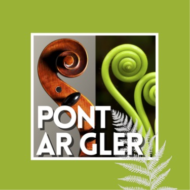

<div
  class="backdrop-blur-md py-4 px-4 border-b border-gray-100 shadow-sm sticky top-0 z-50 "
>
  <div class="w-5/6 mx-auto">
    <div class="flex items-center justify-between">
      <div class="flex items-center">
        
      </div>

      <div class="md:hidden ml-auto" (click)="isMenuOpen = !isMenuOpen">
        
      </div>
      <nav class="hidden md:flex items-center space-x-14">


      
        
       
      </nav>

     <div class="hidden md:flex items-center space-x-4" >
        <Button *ngIf="!isLoggedIn" (click)="goToArtistLogin()"
          class="bg-gradient-to-r from-lime-600 to-lime-700 hover:from-pont-rust/90 hover:to-pont-rust rounded-lg text-white px-8 py-2.5 font-semibold shadow-lg hover:shadow-xl transition-all duration-300 transform hover:scale-105"
        >
        Connexion artiste
        </Button>
        <Button *ngIf="isLoggedIn" (click)="goToMyProfile()"
          class="bg-gradient-to-r from-lime-600 to-lime-700 hover:from-lime-700 hover:to-lime-800 rounded-lg text-white px-8 py-2.5 font-semibold shadow-lg hover:shadow-xl transition-all duration-300 transform hover:scale-105">
          My Profile
        </Button>
        <Button *ngIf="isLoggedIn" (click)="logout()"
          class="bg-pont-rust hover:bg-pont-rust/90 text-white px-8 py-2.5 font-semibold rounded-md shadow-lg hover:shadow-xl transition-all duration-300 transform hover:scale-105">
          Déconnexion
        </Button>
      </div>

    
    </div>

    <div *ngIf="isMenuOpen" class="md:hidden mt-6 py-6 border-t border-gray-100 bg-white/95 backdrop-blur-md rounded-2xl shadow-lg mx-4">
      <nav class="flex flex-col space-y-6 px-6">
        <a href="/#discover" class="text-gray-700 hover:text-pont-green transition-colors font-medium text-lg">
          Accueil
        </a>
        <a href="/artists" class="text-pont-green font-medium text-lg">
          Artistes
        </a>
        <a href="/events" class="text-gray-700 hover:text-pont-green transition-colors font-medium text-lg">
          Événements
        </a>
        <a href="/locations" class="text-gray-700 hover:text-pont-green transition-colors font-medium text-lg">
          Lieux
        </a>
        <a href="/about" class="text-gray-700 hover:text-pont-green transition-colors font-medium text-lg">
          À propos
        </a>
        <div class="flex flex-col space-y-3 pt-6 border-t border-gray-100">
          <button *ngIf="!isLoggedIn" (click)="goToArtistLogin()" class="border border-pont-green text-pont-green hover:bg-pont-green hover:text-white w-fit bg-transparent px-4 py-2 rounded-md">
            Connexion artiste
          </button>
          <button *ngIf="isLoggedIn" (click)="goToMyProfile()" class="border border-pont-green text-pont-green hover:bg-pont-green hover:text-white w-fit bg-transparent px-4 py-2 rounded-md">
            My Profile
          </button>
          <button *ngIf="isLoggedIn" (click)="logout()" class="bg-pont-rust hover:bg-pont-rust/90 text-white w-fit px-6 py-2 rounded-full font-semibold shadow-lg">
            Déconnexion
          </button>
        </div>
      </nav>
    </div>
  </div>
</div>
